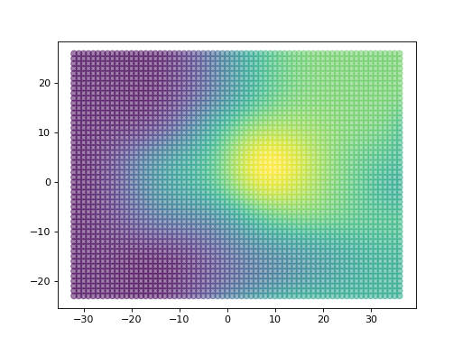
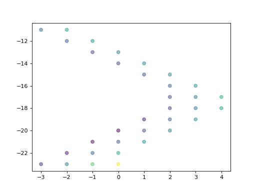

Visualize the Graph¶
Basic Graph Visualization¶
import matplotlib.pyplot as plt
from mpl_toolkits.mplot3d import Axes3D
from dhart.geometry import LoadOBJ
from dhart.raytracer import EmbreeBVH
from dhart.graphgenerator import GenerateGraph
import dhart
# Get a sample model path
obj_path = dhart.get_sample_model("energy_blob_zup.obj")
# Load the obj file
obj = LoadOBJ(obj_path)
# Create a BVH
bvh = EmbreeBVH(obj, True)
# Set the graph parameters
start_point = (0, -20, 20)
spacing = (1, 1, 10)
max_nodes = 5000
up_step, down_step = 0.5, 0.5
up_slope, down_slope = 20, 20
max_step_connections = 1
# Generate the Graph
graph = GenerateGraph(bvh, start_point, spacing, max_nodes,
up_step,up_slope,down_step,down_slope,
max_step_connections, cores=-1)
# Convert the graph to a CSR
csr_graph = graph.CompressToCSR()
# Get the nodes of the graph as a list of x,y,z,type,id tuples
nodes = graph.getNodes()
# get the x,y,z coordinates of the nodes
x = [ n[0] for n in nodes ] # x coordinate
y = [ n[1] for n in nodes ] # y coordinate
z = [ n[2] for n in nodes ] # z coordinate
The graph can be plotted in 3D for illustrative purposes (although it is better to load an obj or use a proper engine like OpenGL).
# Plot the graph in 3D
fig = plt.figure()
ax = Axes3D(fig)
ax.view_init(azim=-123, elev=15)
ax.scatter(x, y, z)
plt.show()
From the top view, this can be plotted in x,y and color nodes by the z value
# Plot the graph
plt.scatter(x, y, c=z, alpha=0.5)
plt.show()

To illustrate the thresholds of this wavy hill, we can reduce the slope tolerances and plot a new graph which shows certain areas are not reachable.
# Set a smaller threshold for slope
up_slope, down_slope = 5, 5
# Generate the Graph
graph = GenerateGraph(bvh, start_point, spacing, max_nodes,
up_step,up_slope,down_step,down_slope,
max_step_connections, cores=-1)
# Convert the graph to a CSR
csr_graph = graph.CompressToCSR()
# Get the nodes of the graph as a list of x,y,z,type,id tuples
nodes = graph.getNodes()
# get the x,y,z coordinates of the nodes and set the color to the z value
x = [ n[0] for n in nodes ] # x coordinate
y = [ n[1] for n in nodes ] # y coordinate
z = [ n[2] for n in nodes ] # z coordinate
# Plot the graph
plt.scatter(x, y, c=z, alpha=0.5)
plt.show()

Using the min_connections parameter we can ensure nodes have a minimum number of out directions (out-degree), which can avoid walls/edges and prevent ‘islands’ caused by single edge connections
# Set a smaller threshold for slope
up_slope, down_slope = 5, 5
min_connections = 3
# Generate the Graph
graph = GenerateGraph(bvh, start_point, spacing, max_nodes,
up_step,up_slope,down_step,down_slope,
max_step_connections, min_connections, cores=-1)
# Convert the graph to a CSR
csr_graph = graph.CompressToCSR()
# Get the nodes of the graph as a list of x,y,z,type,id tuples
nodes = graph.getNodes()
# get the x,y,z coordinates of the nodes and set the color to the z value
x = [ n[0] for n in nodes ] # x coordinate
y = [ n[1] for n in nodes ] # y coordinate
z = [ n[2] for n in nodes ] # z coordinate
# Plot the graph
plt.scatter(x, y, c=z, alpha=0.5)
plt.show()